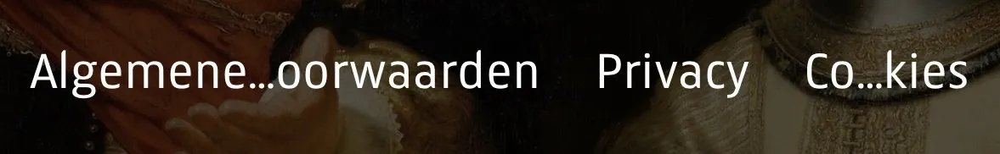
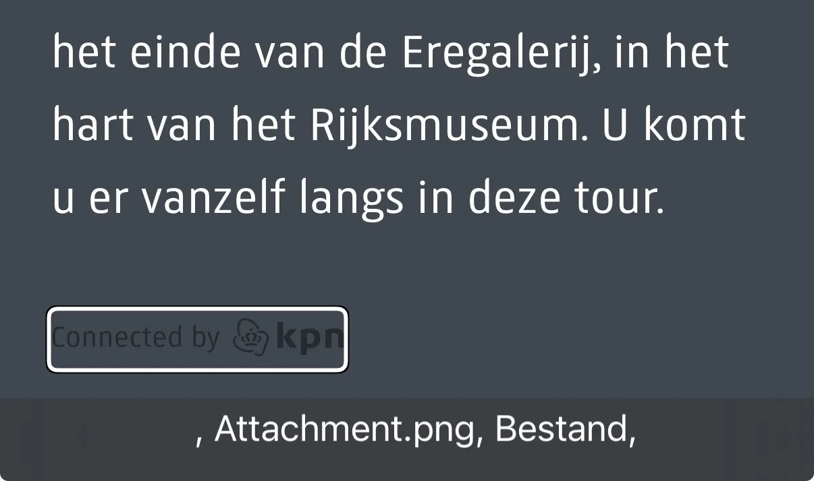
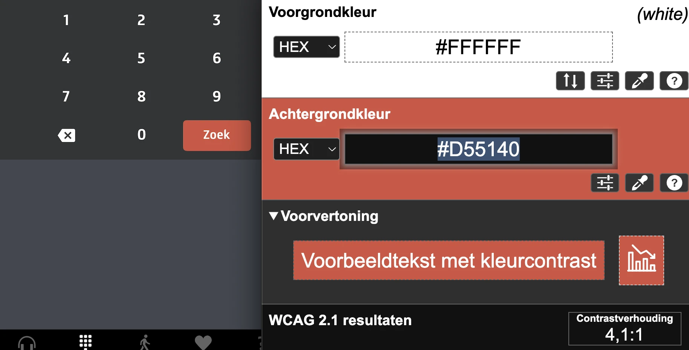
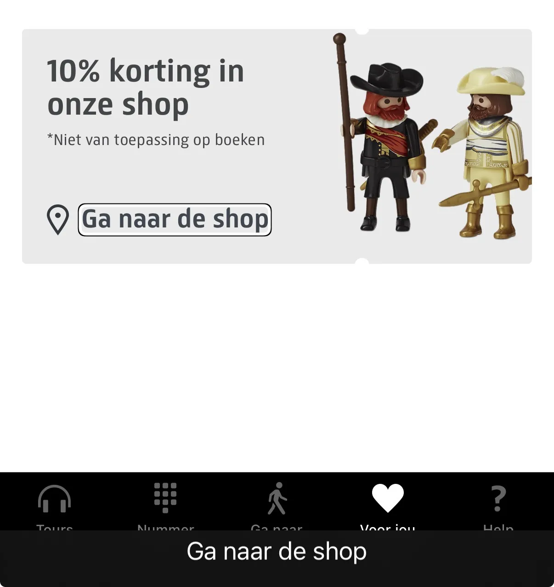
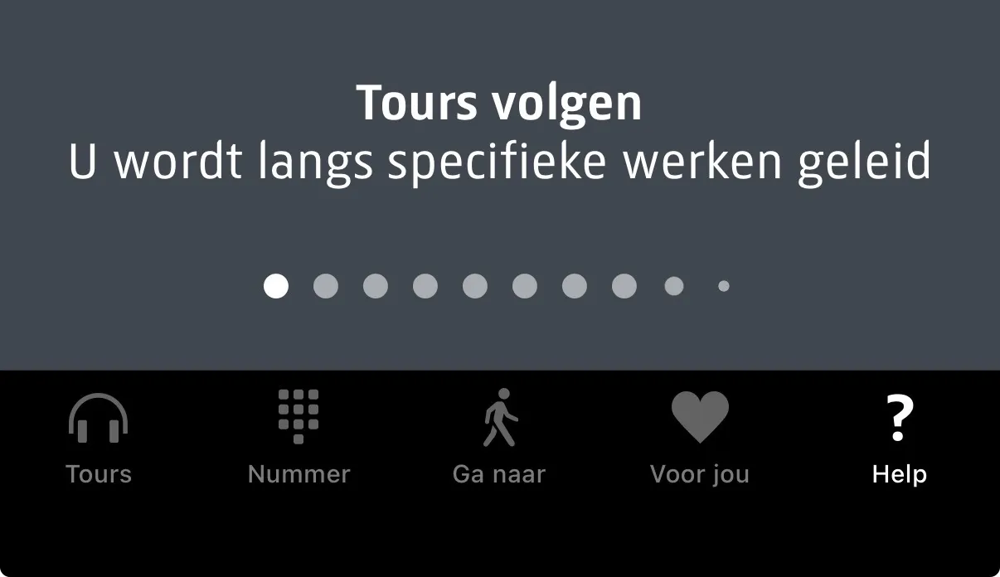

Audit digitale toegankelijkheid van de Rijksmuseum app, iOS
Samenvatting
Wij hebben de Rijksmuseum app, versie iOS onderzocht tussen 10 en 30 december 2025. Op dit moment zijn 37 van de 50 succescriteria als voldoende beoordeeld. In dit rapport lees je wat er bij de overige 13 nog fout gaat, en hoe je dat kunt verbeteren.
Niet de webviews op schermen (deze pagina's zijn onderzocht in de audit van de hoofdwebsite) - Help - Veelgestelde vragen - website pagina Veelgestelde vragen - Of via mobile menu - Veelgestelde vragen - Via mobile menu - Tickets
Basisniveau toegankelijkheidsondersteuning
iPhone met VoiceOver en extern toetsenbord
Technologieën van de website
onbekend
Voortgang opgeloste bevindingen
Samenwerken met je team
Exporteer alle bevindingen als CSV-bestand. Je kunt het in een (online) spreadsheet inladen om met je team samen te werken.
Importeer in Jira
Exporteer alle bevindingen als Jira-compatibel CSV-bestand. Je kunt het direct importeren via Jira > Issues > Import issues from CSV.
Zelf bijhouden in de browser
Houd per bevinding bij of het is opgelost. Je voortgang wordt opgeslagen in jouw browser. Niemand anders kan je resultaat zien.
Markeer deze teksten als koppen. In iOS wordt het kopniveau niet voorgelezen. Gebruik kop-elementen uitsluitend voor koppen die secties introduceren, waaronder koppen in dialoogvensters.
#2 - Knoppen voor taalkeuze hebben onjuiste rol
Impact: GrootType: TechniekWCAG: 4.1.2EN: 9.4.1.2
In het mobiele menu staat een knop “Languages”. Deze knop opent een venster met taalopties. Deze opties zijn knoppen, maar worden niet als knoppen voorgelezen.
Oplossing:
Zorg ervoor dat de schermlezer deze opties als knoppen aankondigt.
Wanneer bij de instelling om tekst te vergroten (in het besturingssysteem)n een na de laatste optie wordt gekozen, moet alle tekst in app op deze wijziging reageren. Dit gebeurt momenteel niet in alle teksten. Alleen de links in het menu passen zich aan.
Oplossing:
Zorg ervoor dat de tekst van de app groter wordt als de instelling voor tekstvergroting wordt aangepast.
#4 - Links zijn niet met spraakbediening te bedienen
Impact: GrootType: TechniekWCAG: 2.5.3EN: 2.5.3

Wanneer bij de instelling om tekst te vergroten (in het besturingssysteem) een na de laatste optie wordt gekozen, verdwijnt een deel van een link in het mobiele menu.
De commando’s die de bezoeker uitspreekt door de tekst van de link voor te lezen, zullen de link dan niet activeren.
Oplossing:
Dit los je op door deze links onder elkaar te plaatsen zodat de volledige tekst van de link zichtbaar blijft.
In het mobiele menu staat het logo “Connected by KPN”. Deze informatieve afbeelding wordt niet voorgelezen.
Op de schermen met tours staat dit logo ook. Hier wordt alleen “KPN, logo” voorgelezen. De tekst “Connected by” maakt geen deel uit van het tekstalternatief.

Er is een derde variant van het KPN-logo. Hier bestaat het tekstalternatief uit de tekst “Attachment.png”.
Oplossing:
Geef het logo een tekstalternatief waarin alle zichtbare tekst is opgenomen.
#6 - Kleurcontrast bij tekst kleiner dan 19px is onvoldoende
Onderaan de app staat een tabnavigatie met de opties “Tours”, “Nummer”, “Ga naar”, “Voor jou” en “Help”. De tekst van de niet-geselecteerde opties is grijs (#636363) en heeft een contrastratio van 3,5:1.
In het mobiele menu heeft de witte link “Tickets” op een lichtgrijze achtergrond (#C1C6C7) een contrastratio van 1,7:1.

Op meerdere schermen staat een rode (#D55140) knop met een witte tekst, bijvoorbeeld “Zoek” op het scherm “Nummer”. De contrastratio bedraagt 4,1:1.
Oplossing:
Omdat deze tekst kleiner is dan 19px, moet het contrast met de achtergrondkleur minimaal 4,5:1 zijn. Op deze pagina staat een instructie om kleurcontrast te testen: https://properaccess.nl/hoe-test-ik-kleurcontrast/.
#7 - Alternatieve tekst van informatieve afbeelding ontbreekt
Op meerdere schermen staat een informatieve afbeelding van een koptelefoon. Deze afbeelding wordt niet voorgelezen. De schermlezer leest alleen de cijfers voor. Zonder context is voor een blinde of slechtziende bezoeker onduidelijk wat deze cijfers betekenen.
Informatieve afbeeldingen, zoals een logo, moeten altijd een betekenisvolle alternatieve tekst hebben zodat schermlezers de informatie correct kunnen aankondigen.
Oplossing:
Voeg een beschrijvende alternatieve tekst toe, bijvoorbeeld: “objectnummer”.
#8 - Jaartallen worden als losse cijfers voorgelezen
Op meerdere schermen worden jaartallen gebruikt om de collecties aan te geven, bijvoorbeeld ‘1100 - 1600’. Deze jaartallen worden voorgelezen als losse cijfers. Een blinde of slechtziende bezoeker hoort: ‘1 1 0 0 1 6 0 0’. Dit maakt het lastig om te begrijpen wat er staat.
Oplossing:
Overweeg om deze jaartallen anders weer te geven, bijvoorbeeld als ‘12de eeuw’.
#10 - Logo Rijksmuseum heeft geen passend tekstalternatief
Impact: GrootType: TechniekWCAG: 1.1.1EN: 9.1.1.1
Op het startscherm staat het logo van het RIjksmuseum. Deze informatieve afbeelding wordt niet voorgelezen.
Onderaan het scherm staat het logo van KPN en de tekst “Connected by”. Het logo en de tekst worden niet voorgelezen.
Oplossing:
Maak deze informatie toegankelijk door een passend tekstalternatief toe te voegen of door de tekst als reguliere tekst op het scherm te plaatsen. Zorg er daarnaast voor dat de Engelstalige tekst naar het Nederlands wordt vertaald.
Op dit scherm staan meerdere koppen die niet als koptekst zijn gemarkeerd, waaronder:
Het beste van het Rijksmuseum
Thematische tours
Tours per afdeling
De kop ‘Het beste van het Rijksmuseum’ en de alinea daaronder zijn samen in één element opgenomen en worden als één tekstblok voorgelezen. Hierdoor wijkt de visuele structuur van informatie af van de structuur die de schermlezer aankondigt.
Oplossing:
Markeer deze teksten als koppen met het correcte HTML-kopniveau en leg de tekststructuur vast in losse elementen.
Onder meerdere secties staat een knop ‘Toon meer’. Er zijn twee knoppen op dit scherm met dezelfde tekst. Op basis van de knoptekst is niet af te leiden welke sectie door de betreffende knop wordt geopend.
Oplossing:
Maak de knoppen onderscheidend door een verborgen tekst toe te voegen die alleen beschikbaar is voor de schermlezer.
#13 - Kleurcontrast bij tekst kleiner dan 24px is onvoldoende
Op dit scherm zijn teksten zoals “In de Philipdsvleugel, verdieping 1”, “Bekijk 18 werken op verdieping 2 (60 min)”, “Relieken, altaarstukken en schilderijen, op verdieping 0 (45 min)” en enkele andere teksten grijs (#A2ABAD) weergegeven op een witte achtergrond. Deze contrastratio bedraagt 2,3:1 en is daarmee onvoldoende.
Oplossing:
Omdat deze tekst kleiner is dan 24px en niet vetgedrukt, moet het contrast minimaal 4,5:1 zijn. Op deze pagina staat een instructie om kleurcontrast te testen: https://properaccess.nl/hoe-test-ik-kleurcontrast/.
Pad: Home scherm - Tour scherm - knop ‘Start de tour’
Een aantal bevindingen is al beschreven bij andere schermen, waaronder: het kleurcontrast van de witte tekst op de knop ‘Start tour’ , het kleurcontrast van de inactieve stippen in de caroussel, jaartallen die als losse cijfers worden voorgelezen en het ontbrekende of onjuiste tekstalternatief bij het KPN-logo.
#14 - Knop heeft een Engelstalige toegankelijke naam (“Next step”)
De knop om naar de volgende dia te navigeren heeft als toegankelijke naam “Next step”. Voor Nederlandstalige bezoekers kan deze Engelstalige tekst een barrière vormen.
Oplossing:
Vertaal deze toegankelijke naam naar het Nederlands.
Wanneer een bezoeker op de knop “Next tour” drukt, verplaatst de focus naar de carrousel op de volgende dia. De inhoud van de dia wordt niet voorgelezen. De bezoeker moet terug navigeren om deze inhoud te horen. Dit is geen logische focusvolgorde.
Op dit scherm staan tours die als knoppen functioneren. De bijbehorende interactieve rol ontbreekt, waardoor de schermlezer niet kan aangeven dat deze elementen bedienbaar zijn.
Wanneer een bezoeker op de knop “Ik ben bij de Multimediatours Balie” drukt, opent een scherm die dat de bezoeker naar een bepaalde locatie leidt. De knoppen “Je bent bij multimediatours”, “Nee? Vul het nummer opnieuw in” en “Tik om te beginnen” worden niet voorgelezen. Daarnaast reageert de knop “Tik om te beginnen” niet op de aanraking.
Oplossing:
Bied een toegankelijk alternatief voor gebruikers van een schermlezer.
Op dit scherm is een pad-afhankelijk gebaar vereist om een actie te voltooien. Wanneer op de knop met de tekst “Ga naar de liftlobby..” wordt geklikt, leest de schermlezer voor:
“Veeg omhoog of omlaag met een vinger om de waarde aan te passen”.
Een pad-afhankelijk gebaar heeft een begin- en eindpunt; tussen deze twee punten moet het scherm worden ingedrukt. Niet iedere bezoeker kan dit uitvoeren.
De grijze tekst “Voer het nummer in …” op de donkergrijze achtergrond heeft een contrastratio van 4,1:1. Dit is onvoldoende.
Oplossing:
Omdat deze tekst kleiner is dan 24px en niet vetgedrukt, moet het contrast minimaal 4,5:1 zijn. Op deze pagina staat een instructie om kleurcontrast te testen: https://properaccess.nl/hoe-test-ik-kleurcontrast/.
#24 - Schermlezer leest belangrijke informatie niet voor
Wanneer een blinde of slechtziende bezoeker cijfers invoert om een kunstwerk op te zoeken, wordt het resultaat van de invoer niet voorgelezen. Tijdens de invoer wordt het getal genoemd, maar wanneer de bezoeker vanaf vanaf het toetsenbord omhoog nagiveert, wordt het resultaat niet voorgelezen.
Wanneer de bezoeker op de knop Verwijderen klikt, wordt het laatst ingevoerde cijfer verwijderd. Welk cijfer dit betreft, wordt niet uitgesproken. Voor bezoekers die het scherm niet kunnen zien en een beperkt kortetermijngeheugen hebben, is daardoor onduidelijk welke cijfers al zijn ingevoerd. Het verwijderen van cijfers is een statusbericht en moet als zodanig auditief worden aangekondigd.
Oplossing:
Zorg ervoor dat de schermlezer uitspreekt welk cijfer wordt verwijderd.
Wanneer de zoekopdracht is ingevoerd en op de Zoekknop is geklikt, verschijnen de zoekresultaten. De schermlezerfocus landt op een van de resultaten midden op het scherm. De verwachte focusvolgorde is dat de focus op de knop “Annuleer” of op het eerste zoekresultaat terechtkomt.
Op dit scherm staan knoppen met de zichtbare teksten “Toilet”, “Café” en “Shop”. In de toegankelijke namen van deze knoppen staat het woord “grijs” vermeld. De knop wordt bijvoorbeeld voorgelezen als “Toilet, grijs, knop”. Dit kan verwarrend zijn voor bezoekers die luisteren naar een schermlezer.
De tekst “Kies je favoriete werken” is niet gemarkeerd als koptekst.
Bezoekers die hulpsoftware gebruiken hebben niets aan een kop die er wel uitziet als kop, maar niet is gemarkeerd als kop. Via koppen kunnen gebruikers van hulpsoftware de inhoud scannen of snel naar een sectie navigeren. Dit kan alleen als koppen ook in de code staan. Wanneer koppen uitsluitend visueel zijn vormgegeven (bijvoorbeeld vetgedrukt), kan de structuur in de code afwijken van de visuele structuur. Dit is te voorkomen door koppen altijd te markeren met het juiste element.
Oplossing:
Markeer deze kop als koptekst.
#28 - Rol van interactief element ontbreekt
Impact: GrootType: TechniekWCAG: 4.1.2EN: 9.4.1.2

Op dit scherm staat een link met de tekst “Ga naar de shop”. Dit element functioneert interactief bij aanraking, maar wordt niet aangekondigd als interactief element. Hierdoor is voor blinde of slechtziende bezoekers onduidelijk wat er een link aanwezig is.
Op dit scherm staat een interactief element met de tekst “Veelgestelde vragen”. Dit element functioneert als link bij aanraking, maar wordt niet als interactief element voorgelezen. Daardoor is voor een blinde of slechtziende bezoeker onduidelijk dat hier een link aanwezig is.
Oplossing:
Leg deze tekst vast als link of knop.
#31 - Interactieve elementen zijn te klein
Impact: GrootType: TechniekWCAG: 4.1.2EN: 9.4.1.2

Onderaan het scherm staat een navigatie met ronde knoppen die kleiner zijn dan de minimaal vereiste afmeting van 24px24 px. Er is een alternatief beschikbaar in de vorm van een knop om vooruit te bladeren, maar er is geen knop om achteruit te bladeren. Daarom moeten deze stippen voldoen aan de minimale vereiste afmeting.
Oplossing:
Maak de stippen groter zodat ze minimaal 24x24 px zijn, of bied een alternatief in de vorm van een achteruitknop.
Onderaan het scherm staat een navigatie met ronde knoppen. Deze knoppen hebben onvoldoende contrast ten opzichte van de achtergrond. Dit is relevant omdat deze koppen het aantal dia’s aangeven.
Oplossing:
Zorg voor een contrastratio van minimaal 3,0:1.
#33 - Carrouselinformatie is niet toegankelijk voor schermlezers
Impact: GrootType: TechniekWCAG: 1.3.1EN: 9.1.3.1
Onderaan het scherm staat een navigatie met ronde knoppen. Deze navigatie wordt niet voorgelezen. Hierdoor weet een blinde of slechtziende bezoeker niet hoeveel dia’s er zijn en welke informatie op de dia’s staat.
Oplossing:
Maak de informatie uit de dia’s toegankelijk voor gebruikers van een schermlezer.
#34 - Filterknoppen worden niet als knoppen aangekondigd
Impact: GrootType: TechniekWCAG: 4.1.2EN: 9.4.1.2
Op dit scherm staan filterknoppen “Ontdek”, “Hoogtepunten”, “Kunstenaars” en meer. Dit zijn knoppen, maar deze interactieve rol wordt niet voorgelezen.Een blinde of slechtziende bezoeker kan daardoor niet vaststellen dat er knoppen aanwezig zijn en dat deze knoppen de collectie filteren.
Oplossing:
Zorg ervoor dat deze elementen de rol van knop hebben en als zodanig worden aangekondigd.
#35 - Selectiestatus filterknoppen wordt niet doorgegeven aan hulpsoftware
Op dit scherm staan filterknoppen zoals “Ontdek”, “Hoogtepunten” en “Kunstenaars”. De geselecteerde toestand van een knop wordt niet voorgelezen. Daardoor is voor een blinde of slechtziende bezoeker onduidelijk welke knop is geselecteerd.
Oplossing:
Zorg ervoor dat de schermlezer de geselecteerde toestand aankondigt.
#36 - Visuele kop is niet als koptekst opgenomen in de code
De tekst “Hoogtepunten” is niet gemarkeerd als koptekst.
Bezoekers die hulpsoftware gebruiken hebben niets aan een kop die er wel uitziet als kop, maar niet gemarkeerd is als kop. Via koppen kunnen gebruikers van hulpsoftware de inhoud scannen of snel naar een sectie navigeren. Dit kan alleen als koppen ook in de code zijn vastgelegd. Wanneer koppen uitsluitend visueel zijn vormgegeven (bijvoorbeeld vetgedrukt), kan de structuur in de code afwijken van de visuele structuur. Dit is te voorkomen door koppen altijd te markeren met het juiste element.
Oplossing:
Markeer deze tekst als koptekst.
#37 - Toegankelijke naam van knop biedt onvoldoende betekenis
Onderaan het scherm staat een knop met een icoon van een lijst en een rondje met een cijfer. Wanneer een bezoeker deze knop activeert, wordt alleen het cijfer voorgelezen. Dit is onvoldoende.
Oplossing:
Geef deze knop een beschrijvende naam, bijvoorbeeld “3 werken geselecteerd”.
Bovenaan het scherm staat een onzichtbare kop die door de schermlezer als een lege kop wordt aangekondigd.
Oplossing:
Verwijder deze kop.
Over dit onderzoek
Leeswijzer
Onze rapporten zijn anders. Bij het bespreken van de gevonden problemen volgen wij niet de structuur van de norm, maar die van jouw website of app. Hierdoor kun je gewoon per pagina of scherm aan de slag gaan. Wel zo makkelijk! Je vindt verderop een overzicht van alle pagina’s met problemen.
We geven je bij elk gevonden issue een paar voorbeelden, maar niet een complete lijst. Controleer zelf of het probleem ook nog op andere plekken voorkomt. Zie het rapport als een leidraad.
Gebruikte norm
Dit onderzoek laat zien in hoeverre de website op dit moment voldoet aan WCAG 2.1, niveau A en AA. WCAG staat voor Web Content Accessibility Guidelines. Dit is de internationale norm voor digitale toegankelijkheid. De Europese norm EN 301 549 bevat alle eisen van WCAG op niveau A en AA.
In dit rapport hebben we korte beschrijvingen van de succescriteria uit de norm opgenomen, met een algemene uitleg erbij. Wil je ze helemaal lezen? Bekijk dan de documentatie van WCAG.
Gebruikte onderzoeksmethode
We gebruiken de onderzoeksmethode WCAG-EM van het W3C. Het proces ziet er als volgt uit:
vaststellen wat binnen en buiten scope valt
vaststellen welke technologieën zijn gebruikt
steekproef (sample) samenstellen
steekproef onderzoeken
gevonden issues beschrijven
Het grootste deel van het onderzoek doen we met de hand. Voor een deel van de toegankelijkheidseisen gebruiken we automatische tools als ondersteuning, zoals axe-core en Chrome Developer Tools.
Belangrijk om te weten
Dit rapport helpt je om de toegankelijkheid van je website te verbeteren. Maar let op: het is geen definitieve, volledige lijst van alle aanwezige toegankelijkheidsproblemen. Dat zit zo:
Het is een steekproef
Ten eerste is het onderzoek gebaseerd op een steekproef. Die is op een betrouwbare manier genomen, en de meeste problemen zullen daardoor zeker aan het licht komen. Toch kan een probleem net buiten de steekproef vallen. Bij een volgend onderzoek kan het wel ontdekt worden.
Op basis van falsificatie
We beoordelen vanuit het principe van falsificatie. Dat houdt in dat we proberen te bewijzen dat iets niet waar is, in plaats van te bevestigen dat het klopt. ‘Voldoet’ betekent daarom dat we geen reden hebben gevonden om een punt af te keuren. Maar als we later wél een reden vinden, kan het alsnog worden afgekeurd.
Voortschrijdend inzicht
Het komt voor dat de beoordeling van een succescriterium op detailniveau verandert. De norm beschrijft namelijk niet élk mogelijk scenario. Samen met andere onderzoeksbureaus overleggen we hoe we met bepaalde situaties omgaan. Zo kan iets dat nu wordt afgekeurd, soms bij een volgend onderzoek worden goedgekeurd en andersom.
Oplossen leidt tot nieuw probleem
Ten slotte kan het gebeuren dat bij het oplossen van een probleem onbedoeld een nieuw toegankelijkheidsprobleem ontstaat. Dat komt dan bij een volgend onderzoek pas naar voren.
Hoe werkt dit rapport?
Bevindingen bekijken en filteren
Alle gevonden toegankelijkheidsproblemen staan onder Gevonden problemen. Je kunt de bevindingen filteren op:
Impact (Groot, Medium, Klein, Advies) — hoe ernstig is het probleem voor de gebruiker?
Type (Content, Techniek) — moet de inhoud of de techniek worden aangepast?
Status (Open, Opgelost) — welke problemen zijn al verholpen?
Voortgang bijhouden
Je kunt je voortgang op twee manieren bijhouden:
CSV-export — exporteer alle bevindingen als CSV-bestand en laad het in een (online) spreadsheet om met je team samen te werken.
Jira-export — exporteer alle bevindingen als Jira-compatibel CSV-bestand. Importeer het via Jira > Issues > Import issues from CSV. Bevindingen worden aangemaakt als bugs met prioriteit op basis van impact.
Registreer in de browser — activeer deze optie om per bevinding bij te houden of het is opgelost. Je voortgang wordt opgeslagen in je browser. Niemand anders kan je resultaat zien. Let op: de voortgang is gekoppeld aan je browser. Als je een andere browser of een ander apparaat gebruikt, begint de telling opnieuw.
Plan van aanpak — download een geprioriteerd plan van aanpak om de gevonden problemen stap voor stap op te lossen. Dit is beschikbaar bij audits vanaf maart 2026.
Link naar een specifieke bevinding delen
Bij elke bevinding verschijnt een link-icoon wanneer je er met de muis overheen gaat. Klik op dit icoon om de directe link naar die bevinding te kopiëren. Je kunt deze link plakken in een e-mail of chatbericht, bijvoorbeeld om een vraag te stellen aan Proper Access over een specifiek punt.